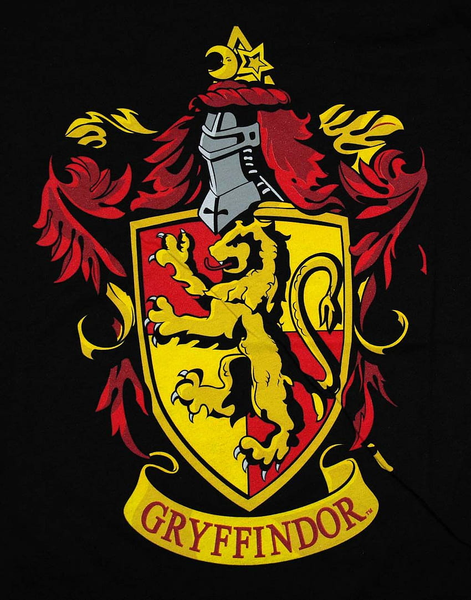
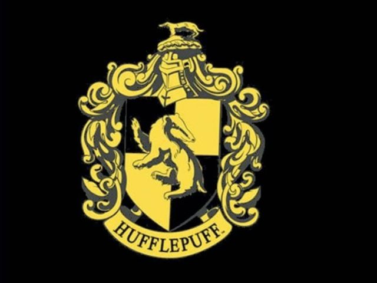
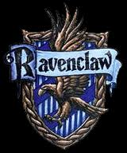
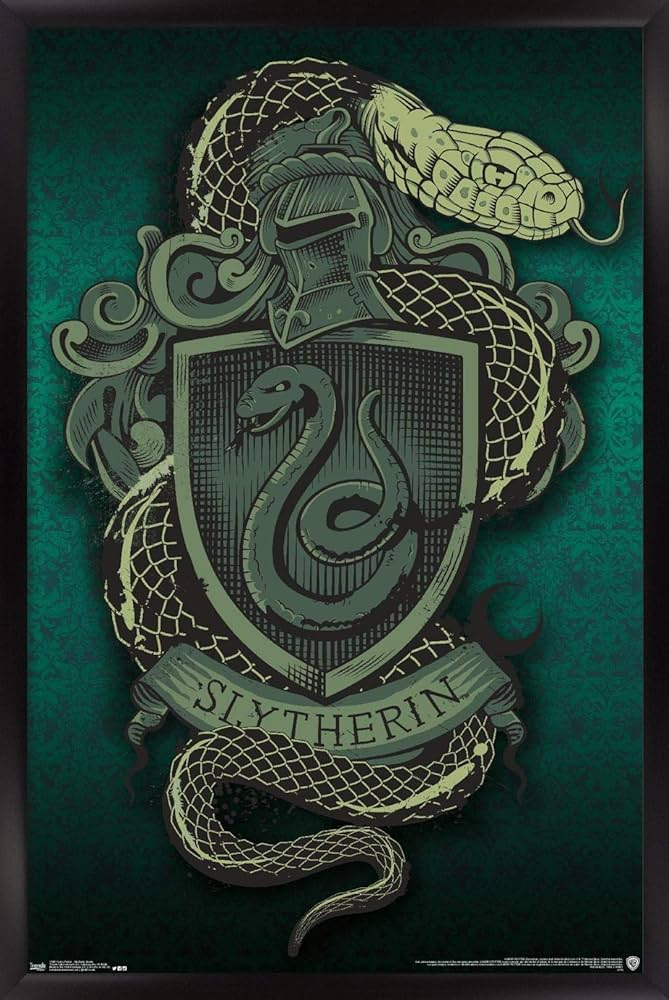

Localizada em algum lugar da Escócia, a Escola de Magia e Bruxaria de Hogwarts é a responsável por formar alguns dos bruxos mais memoráveis da saga Harry Potter. Hogwarts foi fundada durante o século 10, no período medieval por volta de 993 d.C., por quatro bruxos diferentes:
Grifinoria é uma das quatro casas da Escola de Magia e Bruxaria de Hogwarts. A casa foi criada por Godric Gryfindor na época de 932 da idade média. As principais características e traços da casa são bravura, coragem, lealdade e cavalheirismo.

Curiosidade sobre Grifinoria
- Os Grifinórios são ótimos em transfiguração
- Nem todos os Weasley foram escolhidos para Grifinória
- Grifinória é a casa do fogo
Hufflepuff
Lufa-Lufa, fundada por Helga Hufflepuff, é uma das quatro casas da Escola de Magia e Bruxaria de Hogwarts, sendo conhecida como a mais inclusiva entre as outras três, valorizando o trabalho árduo, a dedicação, a paciência, a lealdade e o jogo limpo ao invés de uma aptidão particular de seus membros. Seu animal emblemático é um texugo e suas cores são o amarelo e o preto. A diretora da casa mais notável é a Mestra de Herbologia Pomona Sprout e seu fantasma patrono é o Frei Gorducho.

Curiosidade sobre a Hufflepuff
- Os lufanos são justos, leais, pacientes, trabalham duro
- O mascote é o Texugo. Texugos se alimentam de cobras, quando ele é picado fica imóvel por um tempo e depois volta ao normal.
- A primeira ideia para o mascote da casa era um Urso, porém J. K. Rowlling preferiu um Texugo. Porque um urso não mostrava ser tão acolhedor quanto o texugo.
Ravenclaw
A Corvinal, fundada por Rowena Ravenclaw, é uma das quatro casas da Escola de Magia e Bruxaria de Hogwarts. Seus membros, comumente, são caracterizados por sua inteligência, aprendizado e sabedoria. Suas cores são o azul e bronze, o animal emblemático é uma águia e sua fantasma patrono é a Dama Cinzenta. A casa possui um diretor notável, o Mestre de Feitiços Fílio Flitwick.

Curiosidade sobre a Ravenclaw
- São muito inteligentes, criativos e independentes.
- Corvinais têm bom humor e sabem ter conversas interessantes.
- Costumam ser excêntricos.
Slytherin
Sonserina, fundada por Salazar Slytherin, é uma das quatro casas da Escola de Magia e Bruxaria de Hogwarts. Ao estabelecer a casa, Salazar instruiu o Chapéu Seletor a escolher somente alunos que obtivessem algumas de suas características particulares as quais ele prezava. Entre elas incluem a astúcia, desenvoltura, liderança e ambição. Vários membros da Sonserina possuem uma certa tendência em formar grupos, muitas vezes adquirindo líderes, o que exemplifica ainda mais as qualidades ambiciosas de Slytherin.

Curiosidade sobre a Slytherin
- O filho do Harry Potter é da Sonserina.
- Sonserinos são ótimos com a oclumência.
- Seu espaço de convivência é subterrâneo (masmorras).